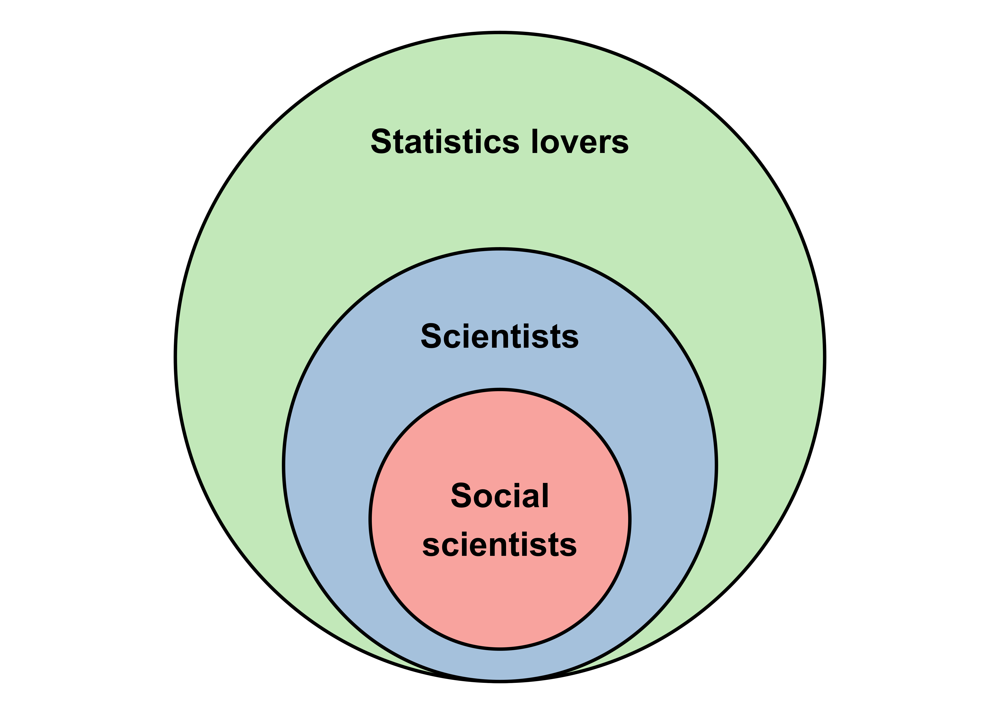
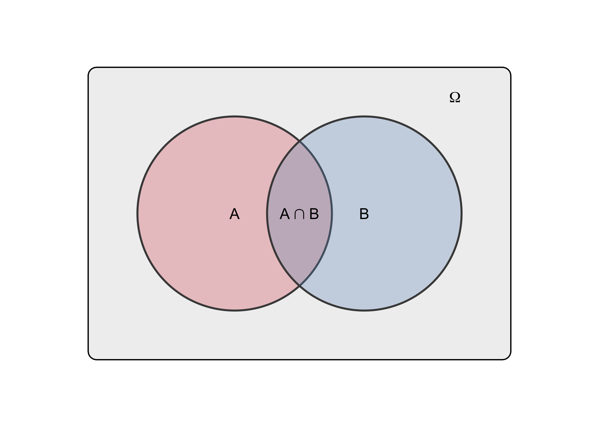

Reasoning | |||
|---|---|---|---|
|
| Valid | Invalid |
Premises | All true | Sound | Unsound |
Not all true | Unsound | Unsound | |
2 An introduction to inductive logic
In the previous chapter, we outlined a strategy to approach the complicated objects that social scientists typically aim to study. From a broad question about a theoretical variable (What are the determinants of human well-being?) and the formulation of hypotheses, our discussion led us to the task of building a statistical model designed to explain a set of data representing our variable of interest. Our hope is that our model, thanks to its simplicity, will help us learn something about the complicated processes that underlie our phenomenon of interest.
Unfortunately, there is an important difficulty that sneaked in along the way. To see it, imagine that a researcher wants to test the following hypothesis: The more human individuals have friends, the higher their well-being. He conducts a study among 200 individuals, measuring their well-being and how many friends they have. After some well-crafted statistical modelling he observes that, indeed, the number of friends of participants is an important explanation of his data. He interprets this result as follows:
Argument (1)
Statement 1: The more my participants had friends, the higher their well-being.
Statement 2: Therefore, the more human individuals have friends, the higher their well-being.
What our imaginary researcher did, was to present what he learned from his model (Statement 1) as a reason to accept his hypothesis (Statement 2). He made what logicians call an argument: a set of reasons presented in support of a conclusion. But this argument has a peculiar feature that makes it problematic to accept: Statement 1 applies to 200 participants (a relatively small set of people), whereas Statement 2 applies to humans in general (a larger set of people). We call this an inductive argument. And here is our problem: can we really say that Statement 1 justifies Statement 2?
The problem with this specific argument is in fact ubiquitous in empirical research (i.e., research based on observations). On the one hand, our questions and hypotheses typically claim a very broad relevance. As social scientists, we want to explain how social phenomena work for all humans or, at the very least, for a large set of humans, such as all the residents of a particular country. This large set, about which we want to learn something, is what we call a population. On the other hand, when we get to the part where we build a statistical model, we very rarely have access to the entire population. Instead, we are typically dealing with a smaller set of data drawn from the population in the context of a particular study. This smaller set of observations drawn from the population is called a sample. Our problem, then, can be expressed through the following question: can observations made in a sample justify drawing a conclusion about a population?
In this chapter, we will define this problem from the perspective of logic. We will see why the kind of arguments that can be trusted the most - deductive arguments - cannot be exclusively relied upon. To build knowledge about the world, we need to use inductive arguments as well. We will then discuss the risks of accepting inductive arguments and how to tame such risks. Along the way, we will also encounter some tools from set theory that will help us in the next chapter.
2.1 Arguments
Let us assume that, as researchers, we strive to make statements about the world that are true. This probably sounds trivial (if it doesn’t, you might want to take a look at Digression 2.1). But it is important to acknowledge that this aim is often difficult to achieve because distinguishing true statements from false ones is rarely, if ever, self-evident. Thus, we should think of a statement as true only if we have reasons to do so. Such reasons, together with the conclusion they are meant to support form what logicians call an argument.
What do you mean “true”?
If the phrase “we should strive to make statements about the world that are true” sounds strange or naïve to you, you might have picked up the habit – from your readings or classes – of saying that there is no such thing as “objective truth”, that truth is ‘relative’, ‘socially constructed’, etc. If that’s the case, I wouldn’t blame you. This kind of claim is surprisingly common within certain circles of social scientists (Lynch, 2004; Sidky, 2020). So, I think it is worth taking a moment to clarify what we should make of them.
Let’s first clarify in what sense I use the term “true”: A proposition is true only if it corresponds to a fact in reality (e.g., Chalmers, 1999; Rasmussen, 2014; Searle, 1995). For instance, the sentence “there is a box of chocolate in my fridge”, is a true proposition only if there indeed is a box of chocolate in my fridge. Thus, “truth” is a characteristic of certain propositions (for alternative definitions of truth, see Burgess & Burgess, 2011).
Notice how, defined this way, truth is objective: it has nothing to do with what I think – or indeed with what anyone thinks. I might have forgotten that there is a box of chocolate in my fridge, and thus mistakenly believe that the proposition “there is a box of chocolate in my fridge” is false. But my belief is irrelevant, it does not change the fact that the proposition is true. If I were to open the fridge and see that there is a box in there, my belief about the truth of the proposition would change but the proposition would not ‘become’ true: it would have been true all along.
If all this sounds obvious to you, that’s good. Because claims about the ‘socially constructed’ or ‘relative’ nature of truth are usually grounded in a misunderstanding of this simple point. That is, such claims ultimately rest on a conflation of two kinds of statements: those of the form “x is true” and those of the form “y believes x to be true” or “x passes for true among y” (the philosopher Susan Haack (1999, Chapters 5, 8) calls this the “passes for” fallacy). A typical example can be found in the work of Michel Foucault, where this conflation is cultivated through ambiguous language. Consider for instance this often quoted passage (Foucault, 2001, p. 131):
Truth is a thing of this world: it is produced only by virtue of multiple forms of constraint. And it induces regular effects of power. Each society has its regime of truth, its “general politics” of truth — that is, the types of discourse it accepts and makes function as true; the mechanisms and instances that enable one to distinguish true and false statements; the means by which each is sanctioned; the techniques and procedures accorded value in the acquisition of truth; the status of those who are charged with saying what counts as true.
If we keep in mind the difference between “truth” and “what passes for truth”, then the first sentence appears to make a radical claim: truth is “produced” (or, one might say, socially constructed). But when describing how this happens, the statement becomes ambiguous as to what exactly is produced. What does it mean that a society has “types of discourse it accepts and makes function as true”? Or that it has “mechanisms and instances that enable one to distinguish true and false statements”? Is the claim that (1) societies have institutions that influence what passes for true in that society? Or is it that (2) those societal institutions truly determine what is actually true in that society? If the claim is (1), then it is a convoluted way of saying something wholly unremarkable. If the claim is (2), then it is obviously mistaken. The fact that, at the time of Galileo, the inquisition forbid any challenge to biblical geocentrism – the idea that the earth is immobile at the center of the universe – didn’t make geocentrism true. The earth didn’t wait for the permission of the inquisition to start orbiting around the sun. In sum, the claim that truth is somehow ‘constructed’ sounds plausible and profound only as long as “truth” and “what passes for truth” are used interchangeably. When the ambiguity is removed, the illusion of profundity dissolves. Try it yourself next time you encounter a similar claim.
In any case, this book assumes that empirical inquiry – and indeed any kind of inquiry – would be utterly futile without the notion of objective truth (e.g., Haack, 1999, Chapter 1). After all, what could we possibly learn from observing the world if nothing can be said to be objectively true?
Arguments are made up of basic statements called propositions. We might say that propositions are the building blocks of arguments. An important feature of propositions is that they are either true or false. Thus, if I say “you are sitting on a chair”, I am uttering a proposition because my utterance is true or false depending on whether you are actually sitting on a chair. But if I say “are you sitting on a chair?” or “sit on a chair!”, I am not uttering a proposition, because questions and orders cannot be said to be true or false.
Propositions are basic statements that are either true or false.
Two types of propositions form an argument: the premises and the conclusion. The premises are the propositions forming the basis on which the argument rests. The are the starting point of the argument. The conclusion, on the other hand, is the end point of the argument. It is the proposition which, according to the argument, is justified by the premises.
The premises are the propositions invoked to justify the conclusion.
The conclusion is the proposition inferred based on the premises.
In everyday talk and writing, arguments rarely include clear labels identifying which parts constitute their premises and which part constitutes their conclusion. But they always have at least one premise and a conclusion. So, they can always be re-stated to make their structure more transparent. For instance,
I am always in a bad mood before I drink a coffee, which I haven’t yet. So, I am in a bad mood.
I can re-write my argument as follows:
Argument (1)
Premise 1: I am always in a bad mood before I drink coffee.
Premise 2: I didn’t drink a coffee yet.
Conclusion: I am in a bad mood.
2.2 Deductive arguments
Not all arguments are of the same kind. Some can be trusted more than others. Deductive logic is concerned with identifying the kind of arguments that can be trusted the most, in the sense that they ensure a perfectly safe passage from premises to conclusion. Using the words of Ian Hacking (2001), we can say that deductive logic tries to identify “risk-free arguments”.
2.2.1 Validity
But what does it mean for an argument to be “risk-free”? Consider Argument (2), for instance:
Argument (2)
Premise 1: The cat is either dead or alive.
Premise 2: The cat is not dead.
Conclusion: The cat is alive.
If Premise 1 and 2 are true, there is absolutely no way that the conclusion is not true. Logicians have a specific term to refer to this property: they say that such an argument is valid.
A deductive argument is valid if and only if the truth of all the premises necessarily implies the truth of the conclusion. Otherwise, it is invalid.
The notion of validity is important because some arguments may pose as risk-free, while they actually are not. They may appear intuitively compelling to us, while they are not, in fact, valid. We say that they are invalid. Consider the following:
Argument (2)
Premise 1: If Trillian is hungry, then she starts eating.
Premise 2: Trillian starts eating.
Conclusion: Trillian is hungry.
Even if the conclusion could happen to be true, it does not necessarily follow from the premises. Premise 1 does not rule out that Trillian could start eating even if not hungry. Thus, the fact that Trillian starts eating (Premise 2) does not necessarily imply that she is hungry. Trillian might simply be bored or trying to please a host who invited her for dinner, for instance. Argument (2) commits a fallacy, i.e., an error in reasoning. This particular fallacy is called “affirming the consequent”.
2.2.2 Soundness
We have seen that a valid argument ensures that the conclusion is true if the premises are all true. But note that there is an important “if” there: if all the premises are true.
In other words, an argument can be valid while its premises are false.
Argument (3)
Premise 1: All scientists love statistics
Premise 2: All social scientists are scientists
Conclusion: All social scientists love statistics
2.2.3 Why deductive arguments only get us far
2.3 Some tools from set theory
Set theory is a branch of mathematics that directly builds on logic. While it not necessary for us to study it in any details, it provides tools that are useful for certain logical problems which will play an important role in the next chapter.
For our purpose, we can simply say that a set is a collection of objects considered as one object. And the objects which are part of the set are call its members or elements.
How is that useful? Well, first of all, thinking in terms of sets makes some arguments much easier to evaluate. This is the case for arguments that use quantifiers like “all”, “some”, or “none”, because they can be represented through relations between sets.
Argument (3)
Premise 1: All scientists love statistics
Premise 2: All social scientists are scientists
Conclusion: All social scientists love statistics


| Symbol |
|---|
\[\Omega\] |
\[\emptyset\] |
\[\cup\] |
\[\cap\] |
\[\setminus\] |
\[\tilde{}\] |
2.4 Inductive logic
2.4.1 Two problems with inductive arguments
Argument (4)
Premise: This orange that the merchant picked from the box and gave me is good.
Conclusion: All oranges in the box are good.